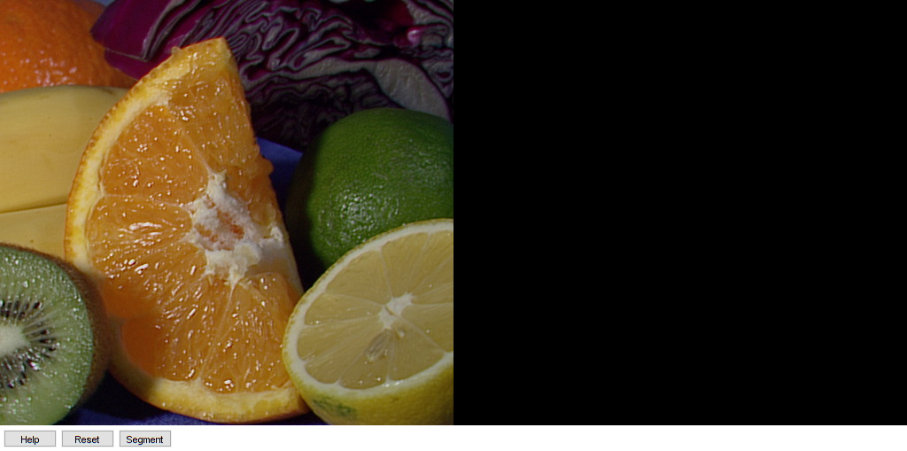

Watershed Demo
An example using the watershed algorithm.
This program demonstrates the famous watershed segmentation algorithm in OpenCV.
Sources:
function varargout = watershed_demo_gui(im) % load an image if nargin < 1 src = imread(fullfile(mexopencv.root(),'test','fruits.jpg')); elseif isempty(im) fmts = imformats(); filtspec = strjoin(strcat('*.', [fmts.ext]), ';'); [fn,fp] = uigetfile(filtspec, 'Select an image'); if fp==0, error('No file selected'); end src = imread(fullfile(fp,fn)); elseif ischar(im) src = imread(im); else src = im; end % we expect an 8-bit RGB image validateattributes(src, {'uint8'}, ... {'ndims',3, 'size',[nan nan 3], 'nonempty'}); % initialize app state, and create the UI app = initApp(src); h = buildGUI(app); % hook event handlers opts = {'Interruptible','off', 'BusyAction','cancel'}; set(h.btn(1), 'Callback',@onHelp); set(h.btn(2), 'Callback',@onReset); set(h.btn(3), 'Callback',@onSegment, opts{:}); set(h.fig, 'WindowKeyPressFcn',@onType, ... 'WindowButtonDownFcn',@onMouseDown, opts{:}); % return graphics handles if nargout > 0, varargout{1} = h; end % ========== Event Handlers ========== function onHelp(~,~) %ONHELP Display usage help dialog helpdlg({ 'Hot keys:' 'ESC - quit the program' 'r - restore the original image' 'SPACE - run watershed segmentation algorithm' '(before running it, roughly mark the areas to segment on' 'the image)' '(before that, roughly outline several markers on the image)' }); end function onReset(~,~) %ONRESET Event handler for reset button app.markerMask(:) = 0; app.pts = zeros(0,2); set(h.img(1), 'CData',app.img0); set(h.img(2), 'CData',app.markerMask); set(h.line, 'XData',NaN, 'YData',NaN); drawnow; end function onSegment(~,~) %ONSEGMENT Event handler for segment button % check markers were specified if isempty(app.pts) disp('markers are not set'); return; end % find connected components in markers mask [contours, hierarchy] = cv.findContours(app.markerMask, ... 'Mode','CComp', 'Method','Simple'); if isempty(contours), return; end % iterate through all the top-level contours, and % draw each connected component with its own label markers = zeros(size(app.markerMask), 'int32'); compCount = 0; idx = 0; while idx >= 0 markers = cv.drawContours(markers, contours, ... 'Hierarchy',hierarchy, 'ContourIdx',idx, ... 'Color',repmat(compCount+1,1,3), 'Thickness','Filled'); idx = hierarchy{idx+1}(1); compCount = compCount + 1; end if compCount == 0, return; end % segment using the markers tic markers = cv.watershed(app.img0, markers); toc % paint the watershed image % (-1: boudaries, 0: unlabeled, 1~N: labeled regions) colorTab = [1 1 1; 0 0 0; rand([compCount 3])]; wshed = uint8(ind2rgb(double(markers+2), colorTab) * 255); % show result if mexopencv.require('images') wshed = imlincomb(0.5, wshed, 0.5, app.imgGray, 'uint8'); else wshed = cv.addWeighted(wshed, 0.5, app.imgGray, 0.5, 0); end set(h.img(2), 'CData',wshed); drawnow; end function onType(~,e) %ONTYPE Event handler for key press on figure % handle keys switch e.Key case {'q', 'escape'} close(h.fig); return; case 'h' onHelp([],[]); case 'r' onReset([],[]); case {'w', 'space'} onSegment([],[]); end end function onMouseDown(~,~) %ONMOUSEDOWN Event handler for mouse down on figure % ignore anything but left mouse clicks if ~strcmp(get(h.fig,'SelectionType'), 'normal') return; end % attach event handlers, and change mouse pointer set(h.fig, 'Pointer','circle', ... 'WindowButtonMotionFcn',@onMouseMove, ... 'WindowButtonUpFcn',@onMouseUp); % start a new polyline onMouseMove([],[]); end function onMouseMove(~,~) %ONMOUSEMOVE Event handler for mouse move on figure % get current point and append it app.pts(end+1,:) = getCurrentPoint(); % update graphic line set(h.line, 'XData',app.pts(:,1), 'YData',app.pts(:,2)); drawnow; end function onMouseUp(~,~) %ONMOUSEUP Event handler for mouse up on figure % detach event handlers, and restore mouse pointer set(h.fig, 'Pointer','arrow', ... 'WindowButtonMotionFcn','', ... 'WindowButtonUpFcn',''); % mark end of polyline app.pts(end+1,:) = NaN; %TODO: improve by only drawing the new polyline points, % no need to re-draw old ones % divide sequences of points separated by NaNs idx = all(isnan(app.pts), 2); % rows with NaN lens = diff([0; find(idx)]) - 1; % length of each run of points pts = mat2cell(app.pts(~idx,:), lens, 2); % cell array of points % fill mask by drawing polylines onto it app.markerMask(:) = 0; app.markerMask = cv.polylines(app.markerMask, pts, ... 'Closed',false, 'Color',255, 'Thickness',5); end % ========== Helper Functions ========== function p = getCurrentPoint() % retrieve current mouse location p = get(h.ax(1), 'CurrentPoint'); p = p(1,1:2); % clamp to within image coordinates p = max(p, [1 1]); p = min(p, [app.sz(2) app.sz(1)]); end end % ========== Initializer functions ========== function app = initApp(img) %INITAPP Initialize app state app = struct(); app.img0 = img; app.imgGray = repmat(rgb2gray(img), [1 1 3]); app.sz = size(img); app.markerMask = zeros(size(img,1), size(img,2), 'uint8'); app.pts = zeros(0,2); end function h = buildGUI(app) %BUILDGUI Creates the UI % parameters sz = app.sz; sz(2) = max(sz(2), 200); % minimum figure width % build the user interface (no resizing to keep it simple) h = struct(); h.fig = figure('Name','Watershed Demo', ... 'NumberTitle','off', 'Menubar','none', 'Resize','off', ... 'Position',[200 200 sz(2)*2 sz(1)+29]); if ~mexopencv.isOctave() %HACK: not implemented in Octave movegui(h.fig, 'center'); end h.ax(1) = axes('Parent',h.fig, ... 'Units','pixels', 'Position',[1 30 sz(2) sz(1)]); h.ax(2) = axes('Parent',h.fig, ... 'Units','pixels', 'Position',[sz(2)+1 30 sz(2) sz(1)]); if ~mexopencv.isOctave() h.img(1) = imshow(app.img0, 'Parent',h.ax(1)); h.img(2) = imshow(app.markerMask, 'Parent',h.ax(2)); else %HACK: https://savannah.gnu.org/bugs/index.php?45473 axes(h.ax(1)); h.img(1) = imshow(app.img0); axes(h.ax(2)); h.img(2) = imshow(app.markerMask); end h.btn(1) = uicontrol('Parent',h.fig, 'Style','pushbutton', ... 'Position',[5 5 60 20], 'String','Help'); h.btn(2) = uicontrol('Parent',h.fig, 'Style','pushbutton', ... 'Position',[70 5 60 20], 'String','Reset'); h.btn(3) = uicontrol('Parent',h.fig, 'Style','pushbutton', ... 'Position',[135 5 60 20], 'String','Segment'); % initialize line h.line = line(NaN, NaN, 'Color','w', 'Parent',h.ax(1), 'LineWidth',5); end